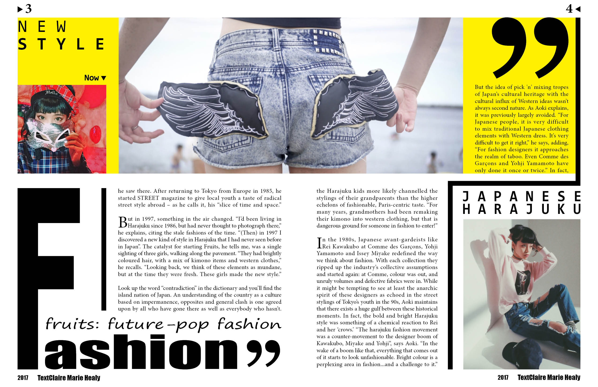
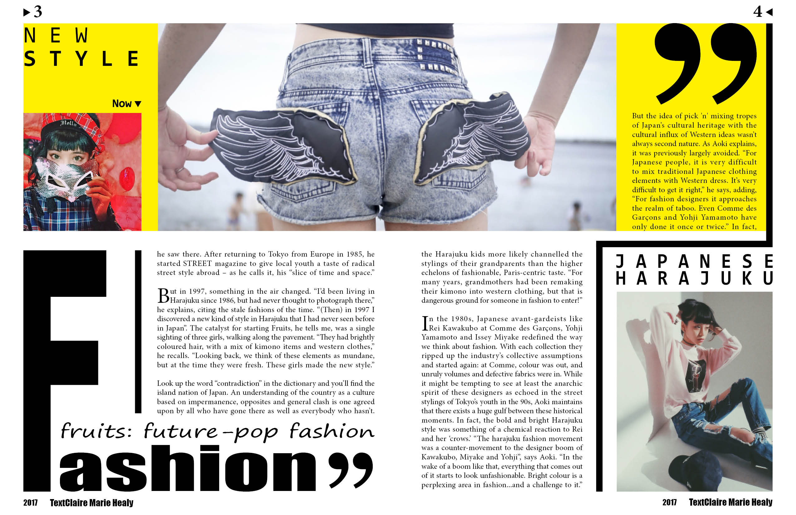

MAGAZINE DESIGN
STEP1: Research
As the common process of graphic design, I first did the researches about the magazine. The research focus on the field it applaied to and its target audience to help me conceive the appropriate design elements.
Display

STEP2: Layout research
In order to apply the magazine design style to the current popular trends, I did research about the layout of relevant magazines.
Display

STEP3: brainstorm
Based on my understanding of the theme of magazine and related researches, I started to do brainstorm and draw as many draft layouts as possible.
Display


STEP4: Element design
Creature elements with illustrator accroding to the previous design sketch and consider of the color plate applied to the magazine.
Display


STEP5: Layout arrangement with InDesign
Use InDesign to arrange the overall context on the magazine with grid and margin.
Display


STEP6: Final version
Finish the final version of magazine and refined it. Create a cover page for the magazine.
Display
 
